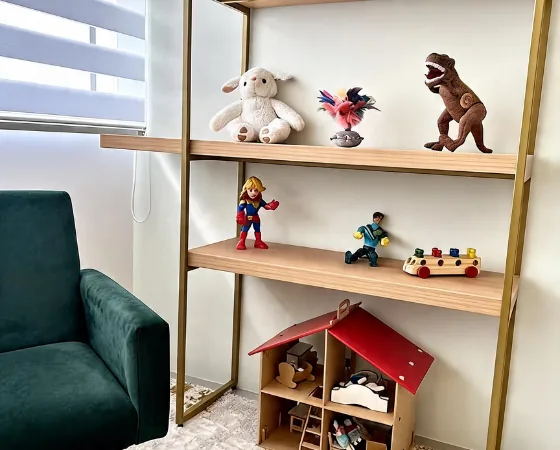
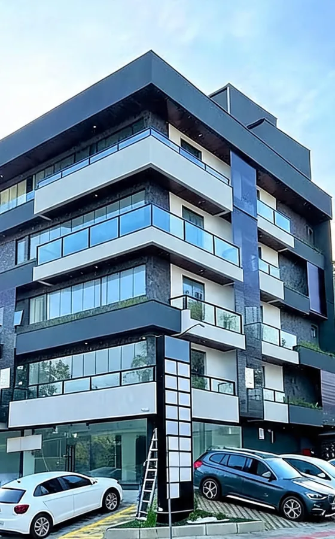
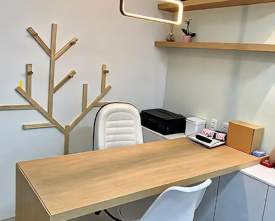
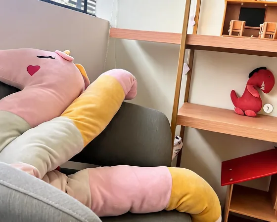
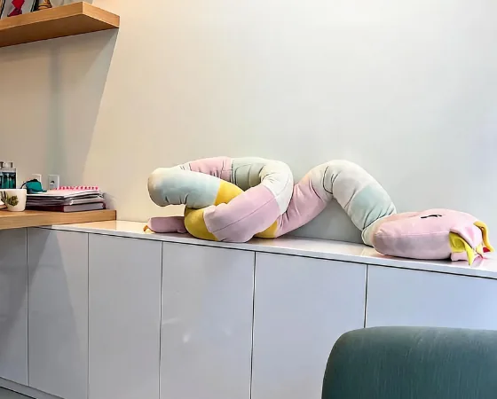

Psicóloga Infantil em Joinville-SC
Cada criança merece ser
A psicoterapia infantil ajuda crianças a desenvolver autonomia, inteligência emocional e habilidades socioemocionais, promovendo um desenvolvimento saudável e equilibrado.
- CRP
- 12/23942
- Experiência
- +15
- Famílias atendidas
- +1000
Você reconhece algum destes sinais?
Quando é hora de buscar ajuda
Cada criança tem seu jeito de pedir socorro. Às vezes é um choro sem motivo aparente. Às vezes é o silêncio. Se você identificar algum destes sinais no seu filho, uma conversa pode mudar tudo.
Por que escolher
Pilares do atendimento infantil
Um cuidado especializado, acolhedor e baseado em evidências — para que cada criança desenvolva seu potencial com confiança e autonomia.
-
Escuta acolhedora
Espaço seguro e empático onde cada criança é respeitada em seu ritmo, suas emoções e sua singularidade — sem julgamentos.
-
Família como parceira
Pais e responsáveis participam ativamente do processo terapêutico, fortalecendo vínculos e amplificando os avanços em casa.
-
Base científica sólida
Atendimento fundamentado na Terapia Cognitivo-Comportamental (TCC) e nas mais recentes evidências em Neuropsicologia infantil.
-
Plano individualizado por criança
Cada atendimento é único. O plano terapêutico é construído a partir do perfil, das necessidades e dos objetivos específicos de cada criança, garantindo resultados mais efetivos no desenvolvimento emocional e cognitivo.
-
CRP 12/23942
Psicóloga registrada, com formação em Neuropsicopedagogia e pós-graduação em andamento em Neuropsicologia. Compromisso com ética, atualização e excelência clínica.
Conheça a Psicóloga
Natane K. K. Gonçalves
Sou Psicóloga Infantil em Joinville-SC (CRP 12/23942), Neuropsicopedagoga e pós-graduanda em Neuropsicologia. Atendo crianças com dificuldades de aprendizagem, desafios comportamentais e emocionais, oferecendo um cuidado acolhedor e individualizado.
Meu trabalho é fundamentado na Terapia Cognitivo-Comportamental (TCC), promovendo o desenvolvimento da autonomia, das habilidades socioemocionais e da inteligência emocional — sempre com a participação ativa da família durante todo o processo terapêutico.
Como posso ajudar seu filho
Psicoterapia Infantil
Consulta presencial
Neuropsicopedagogia
Avaliação & Intervenção
Orientação Familiar
Sessões individuais ou em grupo
Inteligência Emocional
Programa terapêutico
Ansiedade & Medos
Atendimento especializado
Luto & Situações de Crise
Acompanhamento contínuo
Conheça o espaço





Perguntas frequentes sobre psicologia infantil
-
O atendimento é indicado para crianças a partir dos 3 anos de idade. Nessa fase, a terapia lúdica é a principal ferramenta, permitindo que a criança se expresse por meio do brincar de forma natural e espontânea.
-
As sessões são semanais, com duração de 50 minutos cada. A frequência pode ser ajustada conforme a evolução e as necessidades de cada criança ao longo do processo terapêutico.
-
A participação da família é fundamental. São realizadas sessões periódicas de orientação familiar, onde os pais recebem orientações e estratégias para apoiar o desenvolvimento da criança também em casa.
-
Mudanças de comportamento, dificuldades escolares, crises de choro frequentes, medos intensos, agressividade ou isolamento são alguns sinais que merecem atenção. Entre em contato para uma conversa inicial — juntos podemos entender melhor a situação.
Cada criança tem seu tempo.
Atendimento infantil especializado em Joinville-SC. Um cuidado acolhedor, individualizado e baseado em evidências para o desenvolvimento do seu filho.
Retorno em até 1 hora · CRP 12/23942
Vamos cuidar juntos?
Sem formulários longos. Entre em contato diretamente pelo WhatsApp e tire suas dúvidas sobre o atendimento psicológico infantil em Joinville.
Chamar no WhatsApp